Il tuo negozio online: foglio rapido
Un passo = un'azione. Dopo un gruppo di passi c'è un Controllo giallo. Se il controllo va bene, vai avanti. Se no, il controllo ti dice a quale capitolo della dispensa completa andare. I prezzi e le email sono di prova.
Circa 5 minuti. Il modello è un negozio già pronto, fatto solo di HTML, CSS e JavaScript.
https://nicolaregge-pulse.github.io/corso-informatica/2inf-negozio/negozio.zip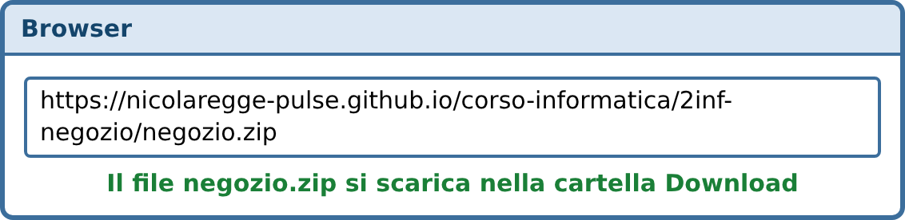
negozio.zip. Scegli Estrai tutto…, poi premi Estrai.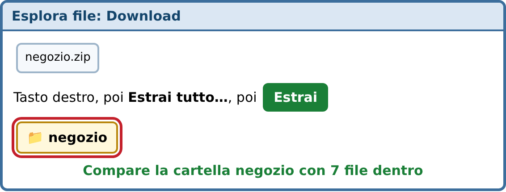
negozio con Ctrl+C. Entra nella cartella mio-sito e incolla con Ctrl+V.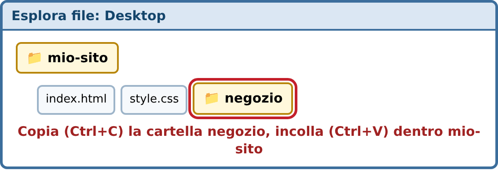
mio-sito/negozio. Vedi 7 file: index.html, prodotti.html, carrello.html, conferma.html, stile.css, carrello.js, pagine.js?Sì: vai avanti.
No? Vai al punto giusto della dispensa completa:
- Non vedo i 7 file, o c'è una cartella dentro l'altra: capitolo 8.1 (pagina 7 della dispensa completa in PDF)
- Che cosa è ogni file: capitolo 3 (pagina 2 della dispensa completa in PDF)
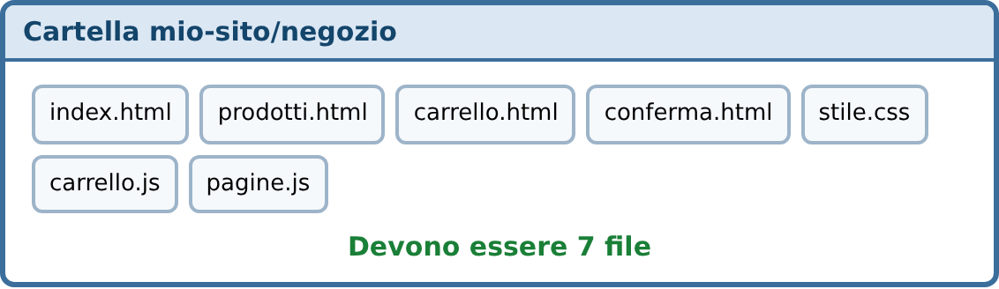
Circa 10 minuti. Alla fine hai un negozio che funziona.
mio-sito/negozio fai doppio clic su index.html. Si apre il browser con la vetrina.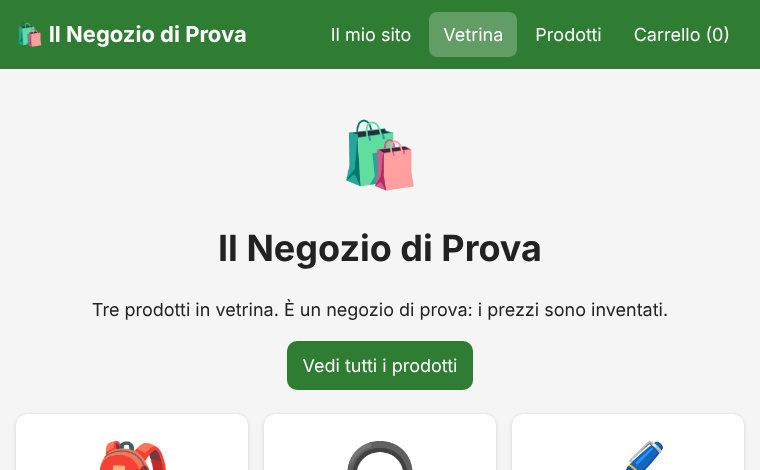
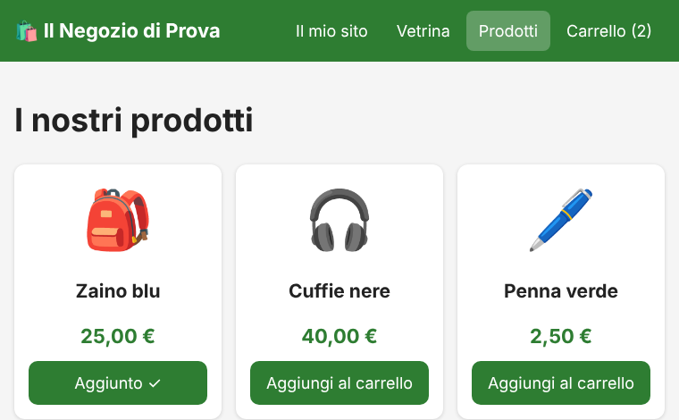
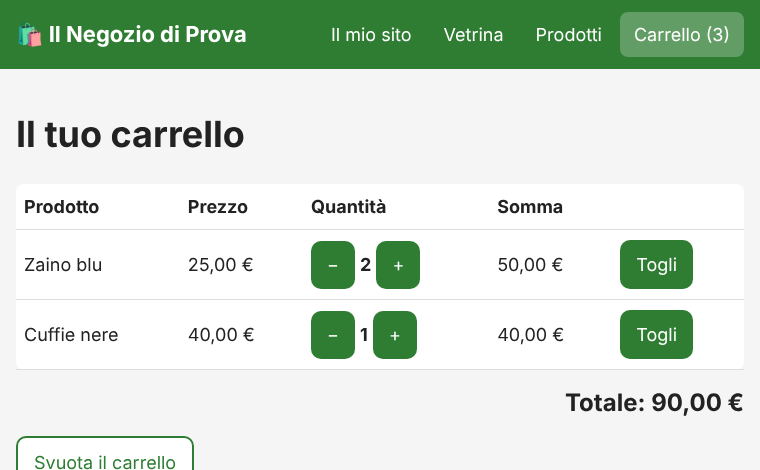
Sì: vai avanti.
No? Vai al punto giusto della dispensa completa:
- Il carrello è vuoto o il totale è sbagliato: capitolo 8.2 (pagina 7 della dispensa completa in PDF)
- Come funziona il carrello: capitolo 4 (pagina 5 della dispensa completa in PDF)
prova@esempio.example.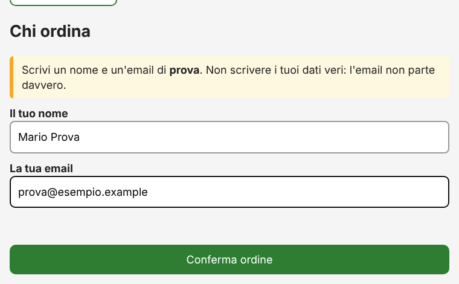
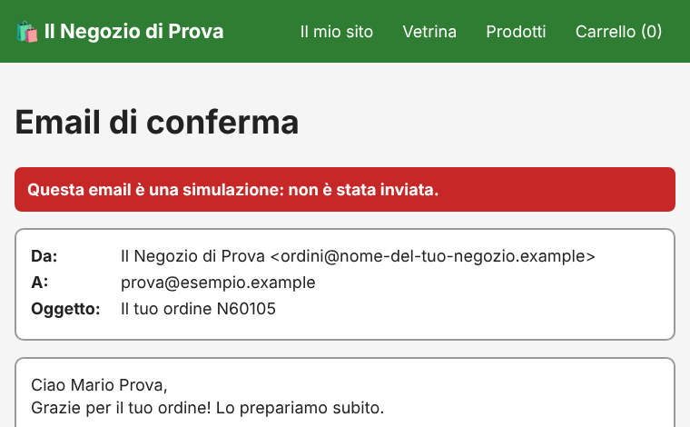
Sì: hai vinto subito! Vai avanti.
No? Vai al punto giusto della dispensa completa:
- La pagina dice «Non c'è nessun ordine»: capitolo 8.4 (pagina 8 della dispensa completa in PDF)
- Che cosa è vero e che cosa è simulato: capitolo 2 (pagina 1 della dispensa completa in PDF)
Circa 20 minuti.
index.html di mio-sito con il Blocco note. Dentro <nav> aggiungi la riga <a href="negozio/index.html">Negozio</a>.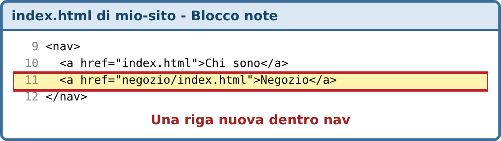
Ctrl+S per salvare.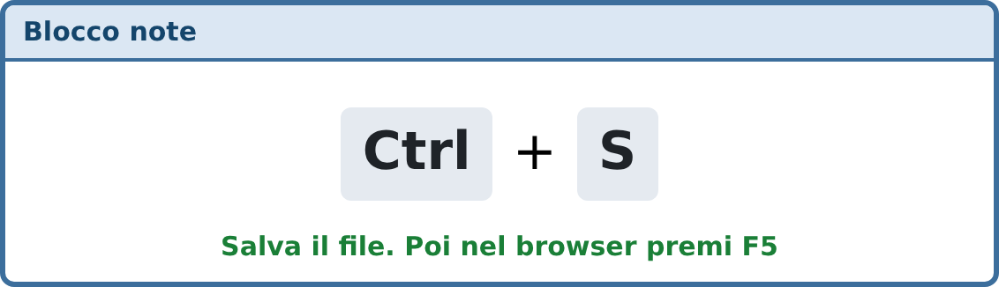
mio-sito. Premi Add file, poi Upload files.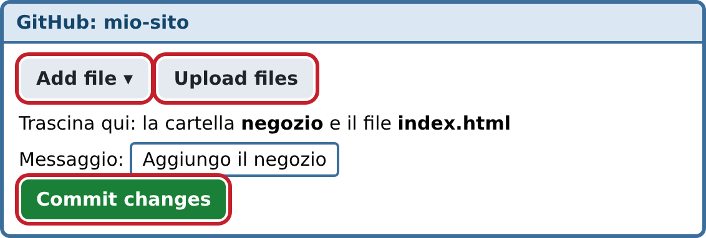
negozio e il file index.html. Aspetta che finisca il caricamento.Aggiungo il negozio. Premi il bottone verde Commit changes.NOMEUTENTE.github.io/mio-sito/negozio/. Premi Ctrl+F5.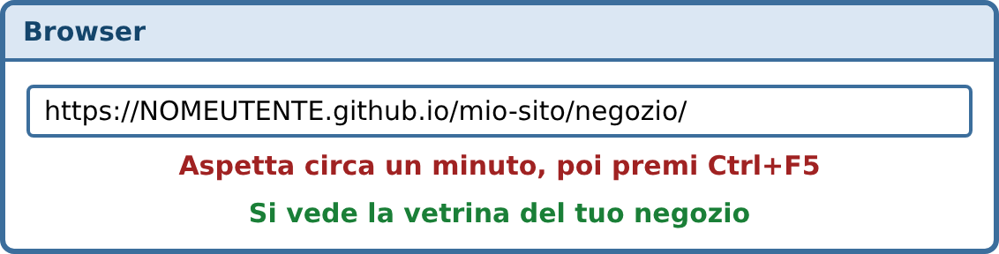
Sì: fai il quiz dell'ora 1 (il link è nel compito). Poi fai una pausa!
No? Vai al punto giusto della dispensa completa:
- Il sito non si aggiorna: capitolo 8.5 (pagina 8 della dispensa completa in PDF)
- Compare «404 There isn't a GitHub Pages site here»: capitolo 8.6 (pagina 8 della dispensa completa in PDF)
- Il mio repository non si chiama mio-sito: capitolo 8.10 (pagina 9 della dispensa completa in PDF)
- Mettere il negozio su GitHub: capitolo 6 (pagina 6 della dispensa completa in PDF)
Circa 30 minuti. Cambi solo il testo tra le virgolette. Dopo ogni cambio: salva con Ctrl+S e nel browser premi F5.
negozio/carrello.js con il Blocco note. Alla riga 4 cambia il nome del negozio. Cambia solo il testo tra le virgolette.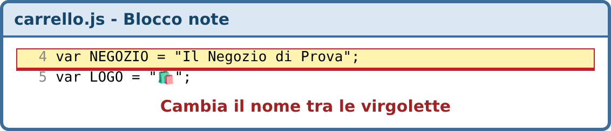
Ctrl+S. Apri index.html del negozio nel browser e premi F5. Vedi il tuo nome?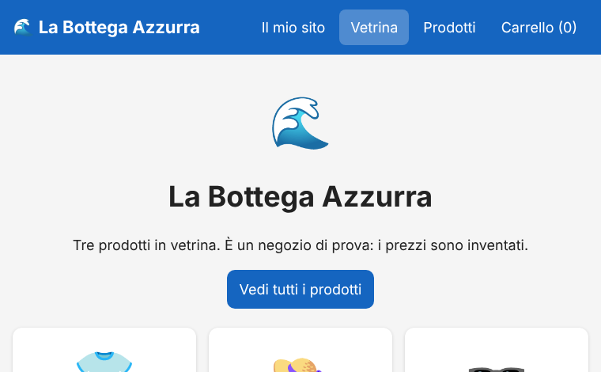
negozio/stile.css. Alla riga 2 cambia il colore dopo --colore:. Prova #1565c0 (blu) o #c62828 (rosso). Salva e premi F5.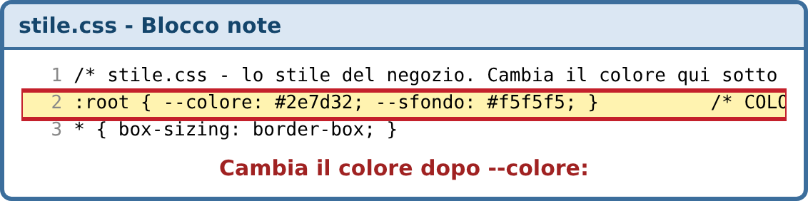
carrello.js cambia i 3 prodotti: nome, prezzo e foto (un emoji). Lascia le virgole e le parentesi graffe. Il prezzo ha il punto, non la virgola: 9.9.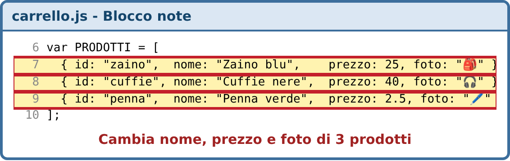
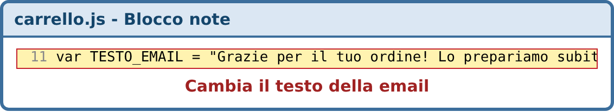
LOGO. Per un file: salva logo.png nella cartella negozio e scrivi "logo.png".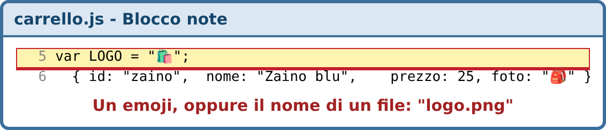
Sì: vai avanti.
No? Vai al punto giusto della dispensa completa:
- Come si cambia il proprio negozio: capitolo 5 (pagina 5 della dispensa completa in PDF)
- L'immagine non si vede: capitolo 8.7 (pagina 8 della dispensa completa in PDF)
- La pagina è tutta bianca o i prodotti sono spariti: capitolo 8.8 (pagina 8 della dispensa completa in PDF)
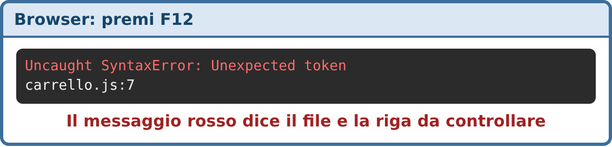
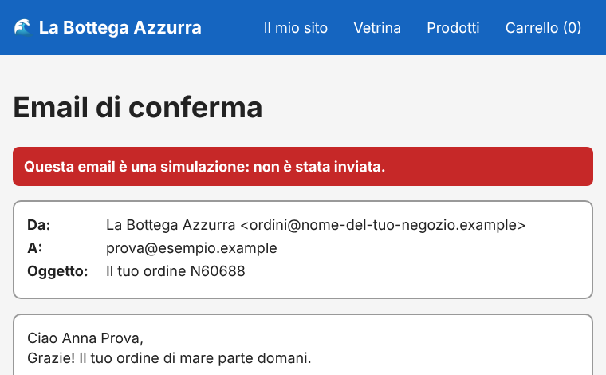
Sì: vai avanti.
No? Vai al punto giusto della dispensa completa:
- Come si calcola il totale: capitolo 4.3 (pagina 5 della dispensa completa in PDF)
- La finta email non compare: capitolo 8.4 (pagina 8 della dispensa completa in PDF)
Circa 15 minuti.
mio-sito, cartella negozio. Premi Add file, poi Upload files.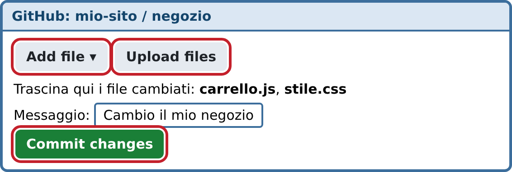
carrello.js, stile.css, e logo.png se l'hai fatto). Scrivi il messaggio Cambio il mio negozio. Premi Commit changes.NOMEUTENTE.github.io/mio-sito/negozio/ e premi Ctrl+F5. Vedi il tuo negozio?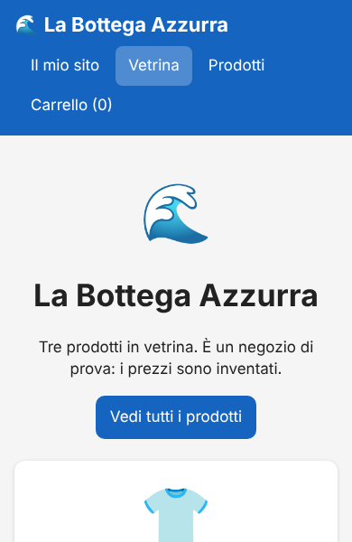
Sì: hai finito la parte difficile!
No? Vai al punto giusto della dispensa completa:
- Provare dal telefono: capitolo 7 (pagina 7 della dispensa completa in PDF)
- Il sito non si aggiorna: capitolo 8.5 (pagina 8 della dispensa completa in PDF)
- L'immagine non si vede: capitolo 8.7 (pagina 8 della dispensa completa in PDF)
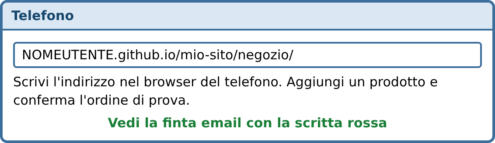
Circa 10 minuti.
Windows+Maiusc+S): il tuo negozio e la finta email.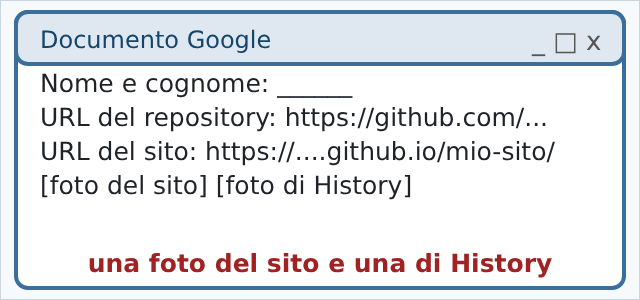
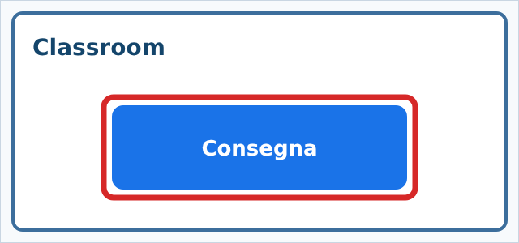
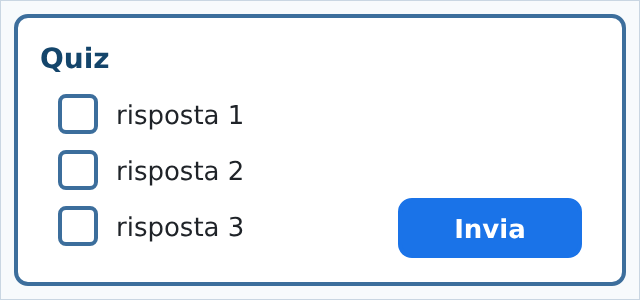
Sì: fai gli esercizi extra.
No? Vai al punto giusto della dispensa completa:
- Esercizi extra: email vera con mailto, sconto, quantità massima: capitolo 9 (pagina 9 della dispensa completa in PDF)